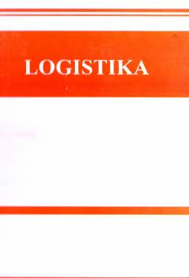

LLogistika konsepsiyasi va moddiy oqimlarni samarali boshqarish bo'yicha o'quv qo'llanma.
Ushbu o'quv qo'llanmada logistikaning zamonaviy konsepsiyasi va vazifalari aks ettirilib, logistik jarayon qatnashchilariga tavsif berilgan. Kitobda moddiy oqimlarni ratsional tashkil etish hisobiga xo'jalik faoliyati samaradorligini oshirishni ta'minlovchi uslublar bayon etilgan.